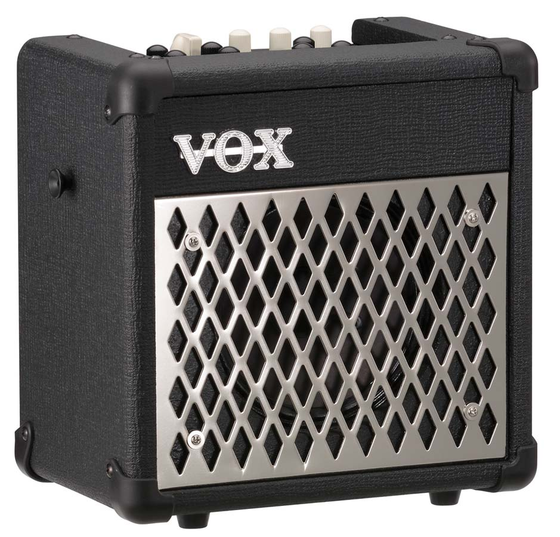

VOX MINI5 Rhythm Battery Powered Amplifier
Introducing the new MINI5 Rhythm - the incredibly lightweight and compact Modeling Guitar Amplifier that lets you jam along or practice with its built-in a wide range of rhythm patterns.
Two colour variation models for the MINI5 Rhythm are now available. The MINI5 Rhythm IV features a beautifully-contrasting ivory and black metallic front grille. The MINI5 Rhythm CL uses the traditional VOX diamond grille cloth, projecting a classic atmosphere that is reminiscent of the AC30.
VOX MINI5 Specifications:
o Amp model: 11 types
o Effects: 8 types
o Rhythms: 99 patterns
o Tempo: 40–240 bpm
o Tuner range: E1–E6 (41.2 Hz–1318.5 Hz)
o Audio Outputs: Headphones x 1
o Audio Inputs: INPUT x 1, MIC IN x 1, AUX IN x 1,
o Power amp output: Maximum approx. 5 W RMS @4 Ω
o Speaker: 6.5 inch 4Ω
o A/D, D/A conversion: 24 bit
o Sampling frequency: 44.1 kHz
o Power supply: Six AA-size /LR6 alkaline batteries or the included AC adapter
o Current consumption: 160 mA
o Dimensions (W x D x H): 269 x 179 x 267 mm / 10.59 x 7.05 x 10.51 inches
o Weigh: 3.5 kg / 7.72 lbs.
o Accessories: Carrying strap, AC adapter (DC 12V ).
Battery life:
o Maximum 19.5 hours at 0.1W,
o Maximum 17 hours at 1.5W
o Maximum 12 hours at 5W.